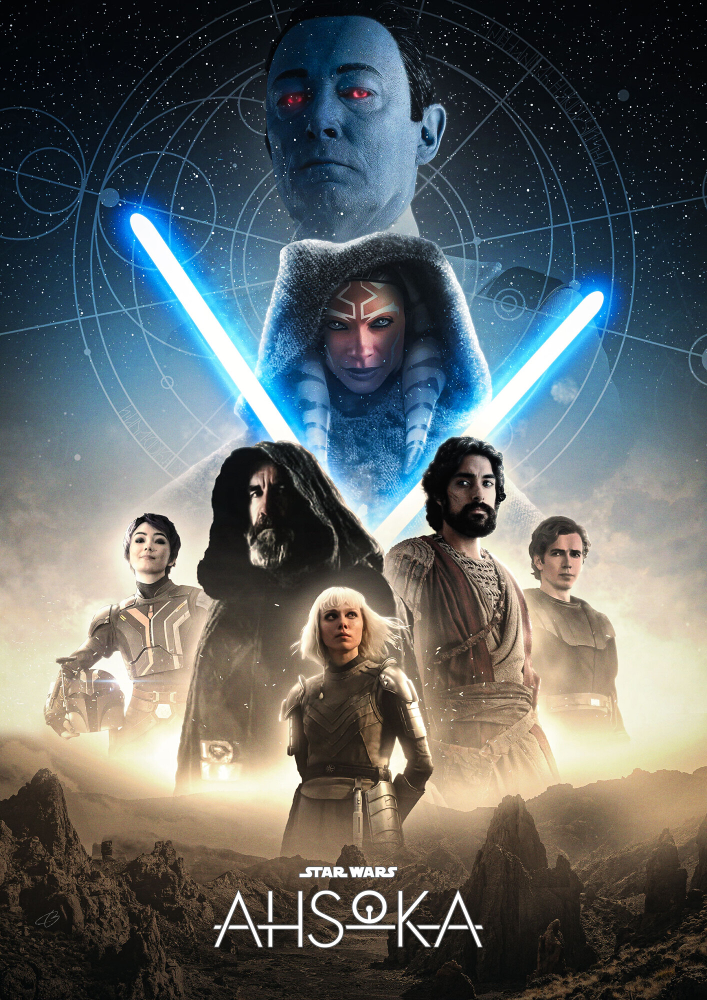
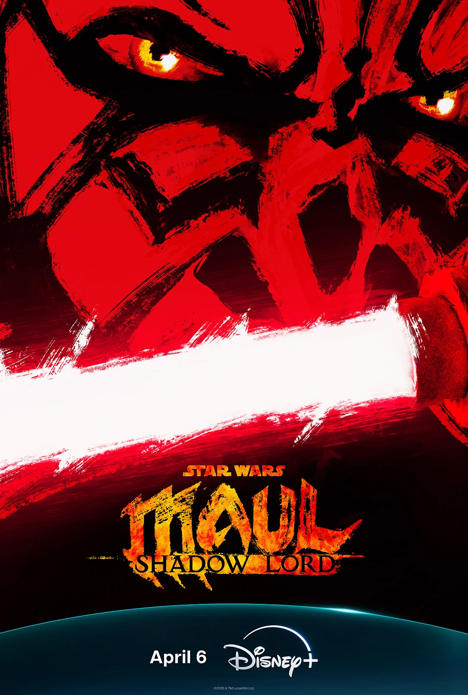

PROSSIME USCITE
The Mandalorian and Grogu
The Mandalorian and Grogu , noto anche come Star Wars: The Mandalorian and Grogu , è un film statunitense
diretto da Jon Favreau e co-scritto da Favreau e Dave Filoni . Prodotto da Lucasfilm e distribuito da Walt
Disney Studios Motion Pictures , fa parte del franchise di Star Wars e continua laserie televisiva Disney+ The
Mandalorian (2019-2023).
La Nuova Repubblica arruola Din Djarin e il suo apprendista Grogu dopo la caduta dell'Impero Galattico , durante
un periodo in cui i signori della guerra imperiali rimasti minacciano la galassia.
Ahsoka stagione 2
Ma quando esattamente potremo vedere Ahsoka 2 su Disney Plus? Questo resta il mistero principale. La piattaforma
non ha ancora rivelato una finestra di lancio più precisa, il che significa che la serie potrebbe debuttare in
qualsiasi momento tra gennaio e dicembre 2026. Tuttavia, il fatto che le riprese siano già completate e la serie
sembri essere il progetto Star Wars più avanti nella pipeline produttiva lascia intendere un'uscita nella prima
metà dell'anno.

Maul – Shadow Lord
è una serie televisiva animata americana di prossima uscita creata da Dave Filoni per il servizio di streaming
Disney+ . Fa parte del franchise di Star Wars , è ambientata dopo gli eventi di Star Wars: The Clone Wars
(2008-2020) e segue l'exsignore dei Sith Maul durante il regno dell'Impero Galattico .
Circa un anno dopo le Guerre dei Cloni , l'ex signore dei Sith Maul ricostruisce il suo sindacato
criminale e cerca un nuovo apprendista sul pianeta Janix durante il regno dell'Impero Galattico .
